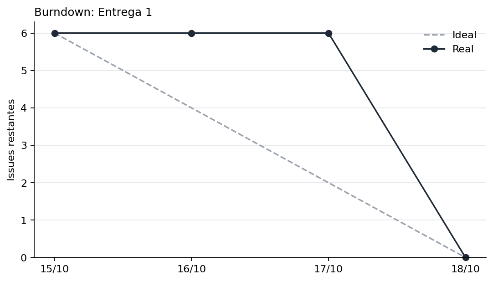
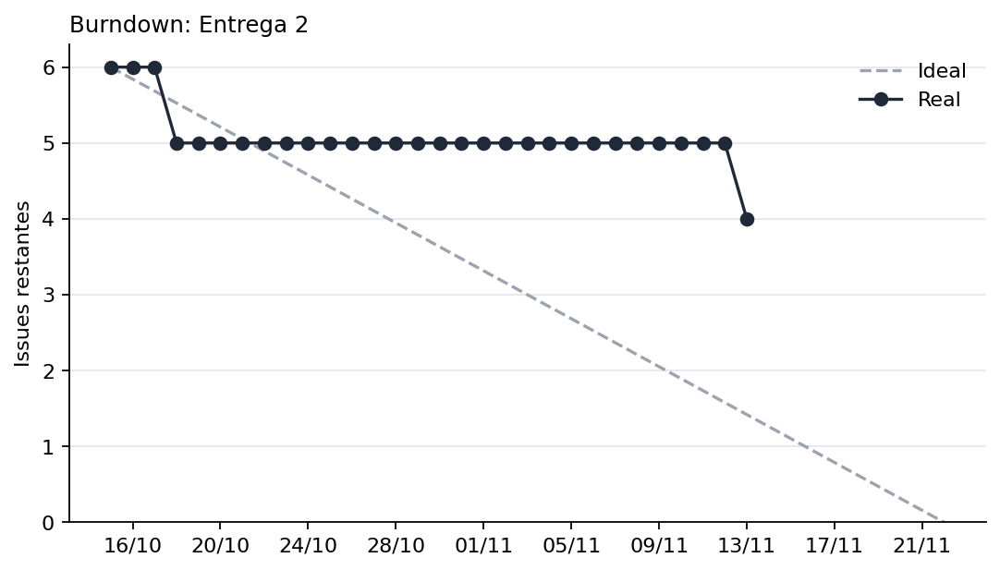

Acompanhamento do Projeto¶
O acompanhamento utiliza dados do repositório Git para observar a evolução das atividades, a distribuição do trabalho e o cumprimento do planejamento da equipe. Esta página reúne, em um único lugar, as métricas de Issues e Milestones coletadas automaticamente do GitHub e as informações que dependem dos registros manuais da equipe. Os resultados servem de referência para as definições de Calendário e Progresso, Recursos e Custos e Desempenho do Processo.
Como os dados são coletados¶
- Fonte: API do GitHub (Milestones, Issues, responsáveis e linha do tempo de cada Issue).
- Frequência: atualização em alterações de Issues e Milestones, comentários em Issues, execução manual do workflow ou rotina diária agendada.
- Linha de base: Issues que entraram no Milestone até 48 horas após a entrada da primeira. As que entram depois são contadas como adicionadas e não alteram Nplanejado.
- Data de referência: o momento da coleta para Milestones abertos e a data de encerramento para Milestones encerrados, de modo que resultados antigos não mudam.
- Estado e datas das Issues: calculados considerando o histórico até a data de referência. Os responsáveis refletem as atribuições atuais exibidas pelo GitHub.
- Atividade (TSA): comentário, commit ou Pull Request vinculado, mudança de status e mudança de responsável feitos por pessoas. Eventos de automação, edições de título e de rótulo não contam. Sem eventos, vale a data de abertura da Issue.
- Alerta de tarefa parada: Issues abertas acima de 3 dias sem atividade recebem o rótulo
sem-atividade, removido quando voltam a ter movimento. - Prazo: fim do dia da data limite do Milestone, no horário de Brasília.
- Burndown: data final configurada para Milestone #2: 22/11/2026; a linha ideal segue até essa data, enquanto a linha real é exibida até a data de referência da coleta. Nos demais Milestones encerrados, o gráfico termina no prazo ou, se o marco foi encerrado antes, na data do encerramento. Milestones ainda abertos sem data final específica continuam até o prazo ou a data de referência, o que for mais distante.
- Dados manuais: esforço, custo equivalente, decisões e registros históricos são mantidos no arquivo-fonte
scripts/metricas/acompanhamento.mde incorporados a esta página durante a geração. - Definições: consulte Gestão do Projeto, Calendário e Progresso, Recursos e Custos e Desempenho do Processo.
Acompanhamento dos Milestones¶
Entrega 1¶
Estado: Encerrado. Prazo limite: 18/10/2026 23:59. Data de referência dos cálculos: 26/10/2026 14:21. Ver Milestone no GitHub.
Conclusão da fase 1 e 2
Issues do Milestone¶
A tabela considera o estado das Issues na data de referência do Milestone. Os responsáveis são os usuários atualmente associados às Issues no GitHub.
| Issue | Tarefa | Responsáveis | Estado | Abertura | Conclusão |
|---|---|---|---|---|---|
| #1 | [Artigo] Escrever Introdução e Referencial Teórico | @GUGOFO, @eii-yahs | Concluída | 15/10/2026 | 18/10/2026 |
| #2 | [GQM] Definir Objetivos, Questões e Métricas (Fase 1 e 2) | @delvale412, @Gabro-MO | Concluída | 15/10/2026 | 18/10/2026 |
| #3 | [GQM] Desenhar o Gráfico Hierárquico GQM | @delvale412, @Gabro-MO | Concluída | 15/10/2026 | 18/10/2026 |
| #4 | [PSM] Configurar a Gestão de Projeto e Métricas PSM/CID | @VitorlagesNA, @AnnaBeatrizAraujo | Concluída | 15/10/2026 | 18/10/2026 |
| #5 | [GitPage] Estruturar e Atualizar a GitPage da Equipe (Fase 1 e 2) | @GUGOFO, @eii-yahs | Concluída | 15/10/2026 | 18/10/2026 |
| #6 | [Artigo] Compilar a 1ª Versão do Artigo em LaTeX e Tabela de Contribuição | @VitorlagesNA, @AnnaBeatrizAraujo | Concluída | 15/10/2026 | 18/10/2026 |
Calendário e Progresso¶
Indicador: Taxa de Conclusão de Tarefas (TCT).
Fórmula: TCT = (Nconc / Nplanejado) × 100.
| Parâmetro | Valor Observado |
|---|---|
| Issues planejadas (Nplanejado) | 6 |
| Issues concluídas (Nconc) | 6 |
| Issues adicionadas após a linha de base | 0 (0 concluídas) |
| Taxa de Conclusão de Tarefas (TCT) | 100,00% |
| Situação da meta do grupo | Meta atingida |

Figura 1: Burndown do Entrega 1. Fonte: elaboração automática com dados do repositório.
Desempenho do Processo¶
Tempo de Ciclo (TC). Meta do grupo: média de até 2,0 dias.
Fórmulas: TC = Data de Conclusão − Data de Criação; TCmédio = soma dos tempos de ciclo / número de Issues concluídas. TC representa o intervalo entre a abertura e a conclusão de uma Issue; TCmédio representa a média dos tempos de ciclo das Issues concluídas.
| Issue | Título | Aberta em | Concluída em | TC |
|---|---|---|---|---|
| #1 | [Artigo] Escrever Introdução e Referencial Teórico | 15/10/2026 11:45 | 18/10/2026 23:24 | 3,5 dias |
| #2 | [GQM] Definir Objetivos, Questões e Métricas (Fase 1 e 2) | 15/10/2026 11:47 | 18/10/2026 19:32 | 3,3 dias |
| #3 | [GQM] Desenhar o Gráfico Hierárquico GQM | 15/10/2026 11:48 | 18/10/2026 19:32 | 3,3 dias |
| #4 | [PSM] Configurar a Gestão de Projeto e Métricas PSM/CID | 15/10/2026 11:49 | 18/10/2026 18:44 | 3,3 dias |
| #5 | [GitPage] Estruturar e Atualizar a GitPage da Equipe (Fase 1 e 2) | 15/10/2026 11:50 | 18/10/2026 18:06 | 3,3 dias |
| #6 | [Artigo] Compilar a 1ª Versão do Artigo em LaTeX e Tabela de Contribuição | 15/10/2026 11:51 | 18/10/2026 22:51 | 3,5 dias |
| Métrica | Valor Calculado | Situação |
|---|---|---|
| Tempo Médio de Ciclo | 3,4 dias | Acima da meta de até 2,0 dias |
Tempo sem Atividade (TSA). Alerta para Issues abertas acima de 3,0 dias.
Fórmula: TSA = Data de Referência − Data da Última Atividade. O TSA representa o tempo transcorrido desde a última atividade registrada, considerando a data de referência adotada.
Situação: Não aplicável (nenhuma Issue aberta).
Entrega 2¶
Estado: Aberto. Prazo limite: 18/11/2026 23:59. Data de referência dos cálculos: 13/11/2026 23:35. Ver Milestone no GitHub.
Conclusão das partes 3 e 4
Issues do Milestone¶
A tabela considera o estado das Issues na data de referência do Milestone. Os responsáveis são os usuários atualmente associados às Issues no GitHub.
| Issue | Tarefa | Responsáveis | Estado | Abertura | Conclusão |
|---|---|---|---|---|---|
| #7 | [Avaliação] Definir Plano de Avaliação e Ambiente de Testes (Fase 3) | @delvale412, @VitorlagesNA, @GUGOFO, @Gabro-MO, @AnnaBeatrizAraujo, @eii-yahs | Aberta | 15/10/2026 | — |
| #8 | [Avaliação] Executar Testes e Coletar Dados Brutos (Fase 4) | @delvale412, @VitorlagesNA, @GUGOFO, @Gabro-MO, @AnnaBeatrizAraujo, @eii-yahs | Aberta | 15/10/2026 | — |
| #9 | [Análise] Processar Métricas e Responder às Questões GQM | @delvale412, @Gabro-MO | Concluída | 15/10/2026 | 18/10/2026 |
| #10 | [Melhoria] Identificar Oportunidades e Executar a Ação de Melhoria | @delvale412, @VitorlagesNA, @GUGOFO, @Gabro-MO, @AnnaBeatrizAraujo, @eii-yahs | Aberta | 15/10/2026 | — |
| #11 | [Artigo] Concluir a 2ª Versão do Artigo (Resultados e Conclusão) | @GUGOFO, @eii-yahs | Aberta | 15/10/2026 | — |
| #12 | [GitPage] Finalizar a GitPage e Garantir a Rastreabilidade Total | @delvale412, @VitorlagesNA, @GUGOFO, @Gabro-MO, @AnnaBeatrizAraujo, @eii-yahs | Concluída | 15/10/2026 | 13/11/2026 |
| #26 | 1. [Avaliação] Definir Plano de Avaliação e Ambiente de Testes (Fase 3) | @VitorlagesNA, @Gotc2607, @GUGOFO, @Gabro-MO, @AnnaBeatrizAraujo, @eii-yahs | Aberta | 11/11/2026 | — |
| #27 | [Avaliação] Executar Testes e Coletar Dados Brutos (Fase 4) | @VitorlagesNA, @Gotc2607, @GUGOFO, @Gabro-MO, @AnnaBeatrizAraujo, @eii-yahs | Aberta | 11/11/2026 | — |
| #28 | [Análise] Processar Métricas e Responder às Questões GQM | @VitorlagesNA, @Gotc2607, @GUGOFO, @Gabro-MO, @AnnaBeatrizAraujo, @eii-yahs | Aberta | 11/11/2026 | — |
| #29 | [GitPage] Finalizar a GitPage e Garantir a Rastreabilidade Total | @VitorlagesNA, @Gotc2607, @GUGOFO, @Gabro-MO, @AnnaBeatrizAraujo, @eii-yahs | Concluída | 11/11/2026 | 13/11/2026 |
Calendário e Progresso¶
Indicador: Taxa de Conclusão de Tarefas (TCT).
Fórmula: TCT = (Nconc / Nplanejado) × 100.
| Parâmetro | Valor Observado |
|---|---|
| Issues planejadas (Nplanejado) | 6 |
| Issues concluídas (Nconc) | 2 |
| Issues adicionadas após a linha de base | 4 (1 concluídas) |
| Taxa de Conclusão de Tarefas (TCT) | 33,33% |
| Situação da meta do grupo | Em andamento |

Figura 2: Burndown do Entrega 2. Fonte: elaboração automática com dados do repositório.
Desempenho do Processo¶
Tempo de Ciclo (TC). Meta do grupo: média de até 2,0 dias.
Fórmulas: TC = Data de Conclusão − Data de Criação; TCmédio = soma dos tempos de ciclo / número de Issues concluídas. TC representa o intervalo entre a abertura e a conclusão de uma Issue; TCmédio representa a média dos tempos de ciclo das Issues concluídas.
| Issue | Título | Aberta em | Concluída em | TC |
|---|---|---|---|---|
| #9 | [Análise] Processar Métricas e Responder às Questões GQM | 15/10/2026 12:03 | 18/10/2026 19:32 | 3,3 dias |
| #12 | [GitPage] Finalizar a GitPage e Garantir a Rastreabilidade Total | 15/10/2026 12:15 | 13/11/2026 23:35 | 29,5 dias |
| #29 | [GitPage] Finalizar a GitPage e Garantir a Rastreabilidade Total | 11/11/2026 21:45 | 13/11/2026 23:35 | 2,1 dias |
| Métrica | Valor Calculado | Situação |
|---|---|---|
| Tempo Médio de Ciclo | 11,6 dias | Acima da meta de até 2,0 dias |
Tempo sem Atividade (TSA). Alerta para Issues abertas acima de 3,0 dias.
Fórmula: TSA = Data de Referência − Data da Última Atividade. O TSA representa o tempo transcorrido desde a última atividade registrada, considerando a data de referência adotada.
| Issue | Título | Última atividade | TSA | Situação |
|---|---|---|---|---|
| #7 | [Avaliação] Definir Plano de Avaliação e Ambiente de Testes (Fase 3) | 15/10/2026 14:06 | 29,4 dias | Parada |
| #8 | [Avaliação] Executar Testes e Coletar Dados Brutos (Fase 4) | 15/10/2026 14:06 | 29,4 dias | Parada |
| #10 | [Melhoria] Identificar Oportunidades e Executar a Ação de Melhoria | 15/10/2026 14:06 | 29,4 dias | Parada |
| #11 | [Artigo] Concluir a 2ª Versão do Artigo (Resultados e Conclusão) | 16/10/2026 12:12 | 28,5 dias | Parada |
| #26 | 1. [Avaliação] Definir Plano de Avaliação e Ambiente de Testes (Fase 3) | 11/11/2026 21:46 | 2,1 dias | Em dia |
| #27 | [Avaliação] Executar Testes e Coletar Dados Brutos (Fase 4) | 11/11/2026 21:46 | 2,1 dias | Em dia |
| #28 | [Análise] Processar Métricas e Responder às Questões GQM | 11/11/2026 21:46 | 2,1 dias | Em dia |
Situação: Alerta: 4 Issue(s) parada(s) acima do limite.
Recursos e Custos (Esforço em Horas e Custo Equivalente)¶
Esta categoria analisa o esforço estimado e realizado pela equipe, a variação entre esses valores e o custo financeiro equivalente, utilizando um valor didático por hora profissional como referência.
Indicadores:
- Esforço Total Estimado (
Ee). - Esforço Total Realizado (
Er). - Variação do Esforço (
Ve). - Custo Financeiro Equivalente.
Fórmulas:
- Esforço Total Realizado:
Er = Σ Hr - Variação do Esforço:
Ve = (|Er − Ee| / Ee) × 100 - Custo Equivalente Estimado:
Ce = Ee × Vh - Custo Equivalente Realizado:
Cr = Er × Vh
Em que:
Hrrepresenta as horas realizadas em cada atividade.Eerepresenta o esforço total estimado.Errepresenta o esforço total realizado.Verepresenta a variação percentual absoluta entre o esforço estimado e o realizado.Vhrepresenta o valor didático da hora profissional.Cerepresenta o custo financeiro equivalente estimado.Crrepresenta o custo financeiro equivalente ao esforço realizado.
| Métrica / Parâmetro | Valor Estimado | Valor Realizado |
|---|---|---|
| Esforço Total da Equipe | 21,0 horas | 20,0 horas |
| Média de Esforço por Integrante (6 membros) | 3,5 h/membro | 3,33 h/membro |
Variação do Esforço (Ve) |
- | 4,76% (dentro do limite de 10%) |
Valor Didático da Hora Profissional (Vh) |
R$ 50,00/hora | R$ 50,00/hora |
| Custo Financeiro Equivalente Total | R$ 1.050,00 | R$ 1.000,00 |
Análise e interpretação gerencial
O esforço estimado para a equipe foi de 21,0 horas, enquanto o esforço realizado foi de 20,0 horas. A diferença absoluta corresponde a uma variação de 4,76%, dentro do limite de 10% definido como critério de adequação.
Considerando seis integrantes, o esforço médio foi de 3,5 horas por membro na estimativa e de aproximadamente 3,33 horas por membro na realização. Esses valores representam médias aritméticas e não necessariamente a distribuição efetiva das horas entre os integrantes.
Para fins exclusivamente didáticos, foi adotado o valor de R$ 50,00 por hora profissional. Com esse parâmetro, o custo financeiro equivalente estimado foi de R$ 1.050,00, enquanto o custo equivalente ao esforço realizado foi de R$ 1.000,00. Esses valores não representam necessariamente despesas financeiras efetivamente incorridas pelo grupo.
Registro Histórico da Entrega 1 — Fase 1: Definição e Caracterização¶
O Milestone 1 (Entrega 1) corresponde à Fase 1 — Definição e Caracterização, com prazo limite em 18/10/2026. A entrega foi encerrada dentro do período planejado. O estado atual das Issues, os responsáveis cadastrados no GitHub, as datas, os indicadores e o gráfico de Burndown são apresentados na seção automática do Milestone 1.
Responsáveis e datas registrados originalmente¶
A tabela abaixo preserva os nomes e a atribuição registrados na documentação original. Ela é um registro histórico; para consultar os responsáveis e estados atuais, utilize a tabela automática de Issues do Milestone 1.
| ID da Issue | Título da Tarefa | Atribuído a | Estado registrado | Data de Abertura | Data de Conclusão |
|---|---|---|---|---|---|
| #1 | Introdução e Referencial Teórico | Yasmin e Gustavo | Concluída | 15/10/2026 | 18/10/2026 |
| #2 | Objetivos, Questões e Métricas (GQM) | Gabriel e Giovani | Concluída | 15/10/2026 | 18/10/2026 |
| #3 | Gráfico Hierárquico GQM | Gabriel e Giovani | Concluída | 15/10/2026 | 18/10/2026 |
| #4 | Configurar Gestão PSM/CID | Ana Beatriz e Victor | Concluída | 15/10/2026 | 18/10/2026 |
| #5 | Estruturar GitPage | Yasmin e Gustavo | Concluída | 15/10/2026 | 18/10/2026 |
| #6 | Compilar 1ª Versão em LaTeX | Ana Beatriz e Victor | Concluída | 15/10/2026 | 18/10/2026 |
Análise e interpretação gerencial — Calendário e Progresso
A equipe concluiu as atividades da Entrega 1 dentro do prazo limite estipulado para 18/10/2026. A evolução do trabalho teve dinâmica de desenvolvimento em lote, na qual as demandas foram elaboradas continuamente e parte significativa dos registros de conclusão foi formalizada próximo à data limite do Milestone. Por isso, a leitura do Burndown deve ser feita em conjunto com as datas efetivas registradas no histórico das Issues.
Análise e interpretação gerencial — Desempenho do Processo
O tempo médio de ciclo da Entrega 1 ficou acima da meta de até 2,0 dias. Esse resultado deve ser interpretado considerando o intervalo entre a abertura das Issues e o registro de conclusão, que ocorreu de forma concentrada próximo ao encerramento do Milestone. Para as entregas seguintes, recomenda-se registrar o andamento das atividades ao longo da execução, evitando que a percepção de progresso dependa predominantemente do fechamento das tarefas.
Decisões de Gestão Registradas¶
Com base nos resultados observados para o Milestone 1, foram registradas as seguintes decisões gerenciais:
- Aprovação do Milestone 1: considerando a conclusão das seis Issues previstas até o prazo limite de 18/10/2026, o marco foi considerado concluído para fins de acompanhamento da entrega da Fase 1.
- Acompanhamento do Esforço e Custo Equivalente (Recursos e Custos): o esforço total realizado na Fase 1 foi de 20,0 horas, apresentando uma variação de 4,76% em relação às 21,0 horas estimadas (
Ve ≤ 10%), resultando em um custo financeiro equivalente de R$ 1.000,00. A alocação de esforço acompanhou a complexidade de cada tarefa e o procedimento de consolidação por consenso retroativo da equipe mostrou-se adequado, devendo ser mantido para a Fase 2. - Atenção ao tempo de ciclo: o resultado ficou acima da meta estabelecida. Para os próximos marcos, recomenda-se acompanhar mais detalhadamente as datas de início, andamento e conclusão das Issues, evitando que o registro do progresso dependa predominantemente do fechamento concentrado das tarefas.
- Manutenção da atualização dos registros: as informações sobre estado, responsáveis, datas e atividades devem continuar sendo atualizadas no repositório, permitindo que as métricas reflitam a execução real do projeto.
Considerações Finais¶
A especificação e o acompanhamento das métricas têm como finalidade apoiar a equipe no monitoramento do projeto e na identificação de oportunidades de melhoria.
Os resultados observados deverão ser interpretados considerando o planejamento, o contexto e as limitações dos dados coletados. A atualização periódica das informações permite que a equipe identifique desvios e avalie a necessidade de ajustes na distribuição das tarefas e no cronograma.
Histórico de Versão¶
| Nome do Membro | Contribuição | Data | Commit |
|---|---|---|---|
| Ana Beatriz | Criação da página de Gestão do Projeto | 15/10/2026 | 2802ef9 |
| Ana Beatriz | Atualização da página | 15/10/2026 | e2f479f |
| Ana Beatriz | Atualização das tabelas de Issues e Milestones | 16/10/2026 | b67ec2c |
| Ana Beatriz | Organização da seção Gestão do Projeto | 16/10/2026 | e372470 |
| Ana Beatriz | Atualização do progresso das Issues | 18/10/2026 | d2b77cf |
| Ana Beatriz | Atualização da conclusão das Issues | 18/10/2026 | 0e35ba5 |